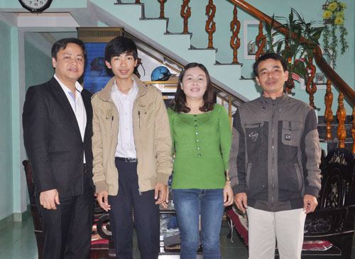

Kỳ tích Võ Quang Hưng

Lần cập nhật cuối lúc Thứ năm, 06 Tháng 2 2014 22:32 Viết bởi Administrator Thứ năm, 06 Tháng 2 2014 22:18
Lần đầu tiên sau 17 năm tái lập tỉnh, Quảng Nam mới có học sinh đoạt giải nhất môn Toán tại kỳ thi học sinh giỏi quốc gia. Người đem về thành tích vang dội đó là Võ Quang Hưng - cậu học trò lớp chuyên Toán K11 trường THPT chuyên Nguyễn Bỉnh Khiêm.
Võ Quang Hưng và ba mẹ cùng thầy giáo chủ nhiệm (bên trái). Ảnh: X.P
Bất ngờ
Thông tin Võ Quang Hưng đoạt giải nhất môn Toán tại kỳ thi học sinh giỏi (HSG) quốc gia năm học 2013 - 2014 làm “nóng” không khí những ngày giáp tết. Ngay lập tức, Hưng cùng 4 học sinh giành giải nhì đã được UBND tỉnh tuyên dương, thưởng nóng vào ngày 24.1. Ủy viên Trung ương Đảng, Bí thư Tỉnh ủy Nguyễn Đức Hải cho biết ông được thầy Nguyễn Đình Tiến - Hiệu trưởng trường THPT chuyên Nguyễn Bỉnh Khiêm điện thoại báo tin mừng ngay sau khi có kết quả. “Đó là một kỳ tích. Vì vậy, Thường trực Tỉnh ủy quyết định gặp mặt, tuyên dương và khen thưởng 5 triệu đồng cho em Võ Quang Hưng” - Bí thư Tỉnh ủy Nguyễn Đức Hải nói.
Giành giải nhất ở một môn “nặng ký” và được coi là “giải thưởng độc quyền” của học trò các thành phố lớn phía bắc như môn Toán rõ ràng là một thành công ngoài mong đợi của bản thân Võ Quang Hưng cũng như các thầy cô giáo trường THPT chuyên Nguyễn Bỉnh Khiêm, nhất là khi Hưng mới học lớp 11. Cậu học trò này chia sẻ :“Với bài làm của mình, thật tình em chỉ nghĩ nhiều khả năng giành được giải nhì. Nhưng cuối cùng là giải nhất nên em khá bất ngờ”. Thầy Diệp Tình - giáo viên chủ nhiệm và là người trực tiếp tham gia dạy bồi dưỡng cho đội tuyển HSG tỉnh cho biết, từ trước đến nay học sinh trường THPT chuyên Nguyễn Bỉnh Khiêm đã từng giành giải ba rồi giải nhì môn Toán tại kỳ thi HSG quốc gia nhưng chưa bao giờ có được thành tích cao nhất. “Sau khi nghe em Hưng trình bày về bài làm của mình, tôi tin chắc là học trò của mình sẽ giành giải nhì, còn giải nhất thì chưa nghĩ tới. Thế nên, tôi có phần bất ngờ khi Hưng đoạt giải nhất” - thầy Tình nói.
Sau 17 năm, “cơn khát” giải thưởng cao nhất tại kỳ thi HSG quốc gia của học trò đất Quảng mới được giải tỏa. Điều đáng nói, toàn quốc chỉ có 7 giải nhất. Với thành tích này, Võ Quang Hưng giành quyền tham gia vòng 2 thi chọn đội tuyển HSG quốc tế IMO sẽ được tổ chức sau Tết Giáp Ngọ và cậu học trò đất Quảng hoàn toàn có thể đạt được kết quả tốt tại cuộc thi này.
Đam mê
Sinh ra trong một gia đình có điều kiện để ăn học khi cả ba và mẹ đều là giáo viên (ba là Võ Quang Tư - giáo viên trường THPT Trần Văn Dư (Phú Ninh) và mẹ là Nguyễn Thị Kim Loan - giáo viên trường Tiểu học Hoàng Văn Thụ (Thăng Bình), ngay từ nhỏ, cậu học trò ở xã Tam Đàn này đã chứng tỏ năng khiếu toán học qua việc giành được nhiều giải thưởng cao tại các kỳ thi HSG huyện Phú Ninh. Khi mới “chân ướt chân ráo” vào lớp 10 Toán K11 trường THPT chuyên Nguyễn Bỉnh Khiêm, lần đầu tiên nhà trường đưa học trò tham gia kỳ thi Olympic Toán khu vực duyên hải và đồng bằng Bắc Bộ, Võ Quang Hưng đã để lại dấu ấn bằng huy chương bạc. Cũng trong năm lớp 10, em giành thêm 1 huy chương bạc tại kỳ thi giải Toán bằng tiếng Anh trên máy tính HOMC. Vượt qua nhiều anh chị đang học lớp 12 trên địa bàn tỉnh, Hưng cũng giành giải nhất cấp tỉnh môn Toán. Giải nhất kỳ thi HSG quốc gia đang là thành tích cao nhất Hưng đạt được.
| “Tôi rất xúc động vì lần đầu tiên Quảng Nam có học sinh đoạt giải nhất kỳ thi HSG quốc gia mà lại danh giá như môn Toán. Đó là một kỳ tích, chứng tỏ con người xứ Quảng có khả năng lập nên những thành tích cao không chỉ ở các lĩnh vực khác mà còn tại kỳ thi HSG quốc gia. Đây cũng là thành quả tốt sau thời gian tỉnh có sự quan tâm đầu tư, đãi ngộ về chế độ, chính sách cho học sinh, giáo viên trường chuyên”. Bí thư Tỉnh ủy Nguyễn Đức Hải. |
Thầy Diệp Tình - giáo viên chủ nhiệm lớp Toán K11 trường THPT chuyên Nguyễn Bỉnh Khiêm đánh giá khá cao về năng lực của cậu học trò của mình. “Tôi phát hiện ra tài năng của Võ Quang Hưng khi em mới vào trường. Đây là học sinh có khả năng tự học rất tốt, trên nền tảng kiến thức thầy dạy, em vận dụng khá linh hoạt và sáng tạo. Khả năng trình bày logic của Hưng cũng cực kỳ thông minh. Đó là những ưu điểm giúp em học toán giỏi và thuyết phục được thầy cô khi làm bài. Không chỉ là một trong 7 HS đoạt giải nhất của cả nước, việc giành giải nhất môn Toán của Hưng còn có giá trị ở chỗ nhiều trường chuyên lớn, có truyền thống ở Hà Nội, TP.Hồ Chí Minh, Thanh Hóa, Thừa Thiên Huế … đều không thể có giải cao nhất tại kỳ thi năm nay” - thầy Tình chia sẻ.
Được hỏi về “bí quyết” giúp học gioitnbk.edu.vn Quang Hưng trả lời đó là niềm đam mê. Theo Hưng, cách học khá quan trọng. Học ít quá đương nhiên là không tốt nhưng học nhiều quá cũng không tốt. Riêng Hưng mỗi ngày dành khoảng vài giờ để học toán. Gần như môn nào Hưng cũng đều học tốt và điều đó giúp cho em liên tục đạt danh hiệu HSG. Ngoài ra, các yếu tố như bình tĩnh, tự tin trước những bài toán khó và trình bày khúc chiết, logic cũng góp phần không nhỏ vào kết quả làm bài. Ngoài kiến thức thầy dạy trên lớp, về nhà Hưng tìm kiếm tài liệu trên mạng, nhất là tài liệu bằng tiếng Anh để bổ sung kiến thức cho bản thân. Võ Quang Hưng đúc kết kinh nghiệm: “Nói chung, theo em muốn học tốt một môn nào đó thì cần rất nhiều yếu tố nhưng điều đầu tiên và quan trọng nhất là phải có niềm đam mê. Từ đó sẽ giúp mình có điều kiện để học tốt”.
XUÂN PHUitnbk.edu.vnngnam.com.vn)
- 15/09/2014 08:52 - Trao giải 5 đề tài đạt giải cuộc thi sáng tạo than…
- 30/08/2014 07:07 - Một lớp có 5 em học sinh đỗ thủ khoa đại học
- 01/04/2014 15:52 - Bộ GD&ĐT vừa công bố lịch thi tốt nghiệp THPT năm …
- 28/03/2014 09:52 - Tam Kỳ - Phú Ninh tổ chức hội thi Khi tôi 18
- 12/02/2014 16:21 - Kỳ thi học sinh giỏi quốc gia năm học 2013 - 2014 …
- itnbk.edu.vn
- 25/01/2014 22:14 - Bí thư Tỉnh ủy Nguyễn Đức Hải chúc mừng trường THP…
- 13/09/2013 14:23 - Khai mạc giải Việt dã truyền thống Báo Quảng Nam m…
- 09/09/2013 08:41 - Ngành Giáo dục Quảng Nam tưng bừng khai giảng năm …
- 05/09/2013 22:12 - Dự lễ khai giảng năm học mới, Bí thư Tỉnh ủy Nguyễ…
- 04/09/2013 06:53 - Phan Thế Hoàng - gương mặt tài năng